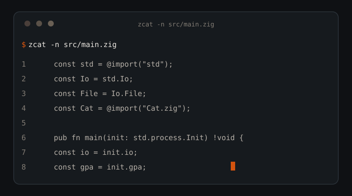

Pure Zig 0.16 · Zero deps · No libc
cat, but 12–40% faster and JSON-native.
zcat is a drop-in cat replacement in pure Zig. Byte-identical output on -n -b -s -E -T, plus a --json mode built for AI coding agents. One 502KB binary for Windows, macOS, Linux.

01 — Why
Why zcat exists
The most-piped command in every agent toolchain, optimized for agents that read files in loops.
✓ Byte-identical, provably
Line modes verified byte-for-byte against coreutils cat 9.x. Scripts cannot tell the difference.
✓ Agent-first JSON
One flag: path, size, numbered lines, escape-safe text, error records that don't kill the batch.
✓ Fast without tricks
No mmap, no threads, no unsafe. Raw syscalls, one 256KB buffer, zero-copy line splitting. Flat memory at any input size.
✓ Exit codes pipelines respect
0 success, 1 file error (continues), 141 broken pipe, silent.
02 — Flags
Eight flags. Combined shorts work.
zcat -nbsET file.txt is valid. -n/-b are last-wins. A lone - reads stdin anywhere in the list.
| Short | Long | Effect |
|---|---|---|
-n | --number | Number every output line, including blanks |
-b | --number-nonblank | Number non-empty lines only |
-s | --squeeze-blank | Collapse runs of empty lines into one |
-E | --show-ends | Append $ to each line ending |
-T | --show-tabs | Render tabs as ^I |
| — | --json | Structured output for agents |
-h | --help | Usage |
-V | --version | Version |
03 — JSON
Structured reads, not text dumps.
zcat --json example.txt
{"files":[{"path":"example.txt","size":2048,"lines":[{"n":1,"text":"first line"}]}]}- stdin:
pathis"-",sizeisnull. - Controls escape as
\uXXXX; quotes and backslashes escape. - Unreadable files emit
{"path":"...","error":"..."}, batch continues. - Empty files:
"lines":[].
04 — Benchmarks
Faster than GNU cat 9.x.
96MB file, ReleaseFast, sink /dev/null, median of 3 runs.
| Operation | zcat | cat | Speedup |
|---|---|---|---|
| Plain copy | 72ms | 82ms | +12% |
-n number all | 112ms | 185ms | +40% |
-s squeeze | 100ms | 145ms | +30% |
--json | 275ms | — | no counterpart |
05 — Install
Clone, build, alias.
Requires Zig 0.16.0. Binary lands at zig-out/bin/zcat (~502KB).
Clone
git clone https://github.com/AkashPriyadarshii/zcat.git cd zcat
Build
Bench builds use ReleaseFast.
zig build -Doptimize=ReleaseSmall
Alias
alias cat=zcat
zcat collides with gzip's zcat. Use the full path (~/.local/bin/zcat.exe) there.06 — Trilogy
Read, find, orient.
File reading, search, and orientation as token-budgeted CLI tools.